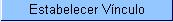

Manter Vínculos de
Imóveis para Rateio de Consumo
Estabelecer Vínculo
Esta opção do
sistema faz parte do processo de cadastramento das
informações da medição
individualizada de imóveis.
Permite ao
usuário o estabelecimento do vínculo das sub-unidades com o imóvel condomínio.
Para ter acesso a esta
função você deve clicar no
"botão"  existente na tela "Manter
Vínculos para Rateio de Consumo".
Preenchimento
dos campos
Observação:
Os campos
obrigatórios estão marcados um um asterisco
vermelho (*)
Funcionalidade
dos botões:
|
Botão
|
Descrição
|
 |
Utilize este botão para adicionar o imóvel
informado/selecionado, na lista de imóveis vinculados ao
imóvel condomínio. O imóvel informado/selecionado
deve ter, entre outros, os seguintes pré-requisitos:
- Não ter vínculo com nenhum outro imóvel condomínio
- Pertencer à mesma rota do imóvel condomínio
Caso o imóvel informado/selecionado cumpra todos os
pré-requisitos exigidos, o sistema irá incluí-lo
relação dos imóveis com vínculo ao
imóvel condomínio. |
|
Este botão é apresentado ao lado de cada
imóvel apresentado na tabela de imóveis vinculados ao
imóvel condomínio. Utilize-o para remover o imóvel
da relação. Esta remoção será
temporária, até que você a confirme pressionando o
botão . |
|
|
Utilize
este
botão para fazer com que o sistema efetue a
atualização dos vínculos dos imóveis
relacionados na tabela com o Imóvel condomínio. |

|
Utilize
este botão
para fechar a tela sem efetuar nenhuma
modificação na informação. |
Tela
de Sucesso:
A tela de sucesso
será apresentada
após você clicar no botão , e
não houver nenhuma
inconsistência no conteúdo dos campos da tela.
O sistema apresentará a seguinte mensagem:
"<<quantidade de imóveis vinculados>> imóveis
vinculados ao imóvel condomínio <<matrícula do imóvel condomínio>> com sucesso.".
ou a mensagem:
"Imóvel(is) já vinculado(s) ao
imóvel condomínio <<matrícula do imóvel condomínio>>",
Caso você tenha efetuado, apenas, remoção de algum imóvel da lista.
Clique no botão para
voltar para a tela "Manter Vínculos para Reteio de Consumo" e, se for o
caso, efetuar outra operação.
Tópicos
Relacionados:
 , que fica ao lado do campo. Neste caso
será apresentada uma tela de “popup”,
onde será possível efetuar a pesquisa de
imóveis no cadastro. Após a
informação da matrícula de um
imóvel, ou da seleção de um
imóvel na
tela de pesquisa, o sistema apresentará a
inscrição no campo correspondente.
, que fica ao lado do campo. Neste caso
será apresentada uma tela de “popup”,
onde será possível efetuar a pesquisa de
imóveis no cadastro. Após a
informação da matrícula de um
imóvel, ou da seleção de um
imóvel na
tela de pesquisa, o sistema apresentará a
inscrição no campo correspondente.
 .
.